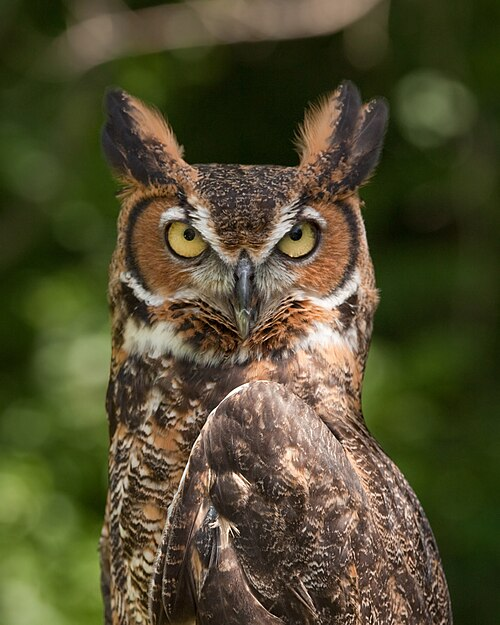

About Birds
Birds are warm-blooded animals that have
feathers, wings, and beaks. Most birds
can fly, and all birds lay eggs.
Learn more about
birds on Wikipedia
.
What Are Birds of Prey?
Birds of prey are birds that hunt and
eat other animals. They have sharp
claws called talons, strong beaks,
and excellent eyesight.
Some common birds of prey include
eagles, falcons, and owls.
Learn more about birds of prey
1. Bald Eagle

The bald eagle is a large bird of prey found
in North America. It is known for its white
head and tail, dark brown body, and yellow
beak. The bald eagle is the national bird
of the United States and is often used as
a symbol of freedom and strength.
Bald eagles usually live near large bodies
of water, such as lakes, rivers, and oceans.
Their main food is fish, which they catch
using their sharp talons. They also eat
smaller birds and mammals. Bald eagles build
very large nests in tall trees, and they
may return to the same nest year after year.
Three Interesting Facts
-
Diet: Bald eagles mainly eat fish,
but they also eat other small animals.
-
Habitat: They prefer areas near
lakes, rivers, and coastlines.
-
Nesting: Their nests can grow
extremely large because they
add materials each year.
Bald Eagle - Wikipedia
2. Peregrine Falcon

The peregrine falcon is a powerful bird
of prey famous for its incredible speed.
It is considered the fastest animal in
the world and can reach speeds over
200 miles per hour while diving.
It has a blue-gray back, a lighter
underside, and dark markings on its head.
Peregrine falcons are found on nearly
every continent. They live in many
different environments, including
mountains, coastal cliffs, and cities.
These falcons mainly hunt other birds,
such as pigeons and ducks. They often
catch their prey in midair by diving
toward it at very high speeds.
Three Interesting Facts
-
Speed: They can dive at speeds
greater than 200 miles per hour.
-
Diet: They mainly eat other birds
that they catch while flying.
-
Habitat: They can live on cliffs,
mountains, and tall city buildings.
Peregrine Falcon - Wikipedia
3. Great Horned Owl

The great horned owl is a large and
powerful owl found throughout the
Americas. It gets its name from the
two feather tufts on top of its head
that look like horns. It has a round
face, large yellow eyes, and brown
and gray feathers that help it blend
into trees.
Great horned owls are mostly active
at night. They have excellent hearing
and eyesight, which help them locate
prey in the darkness. Their soft
feathers allow them to fly quietly
while hunting. They eat many different
animals, including mice, rabbits,
squirrels, and other birds.
Three Interesting Facts
-
Hunting: They mainly hunt at
night using their excellent
hearing and eyesight.
-
Diet: They eat rodents, rabbits,
squirrels, and other birds.
-
Habitat: They live in forests,
grasslands, deserts, and
sometimes suburban areas.
Great Horned Owl - Wikipedia
Conclusion
Birds of prey are important to nature
because they help control populations
of other animals. Each species has
unique abilities that help it survive.